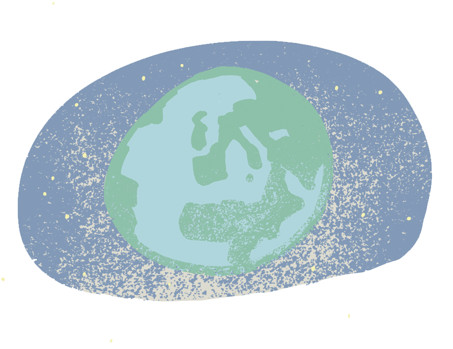
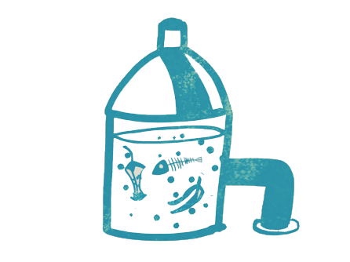
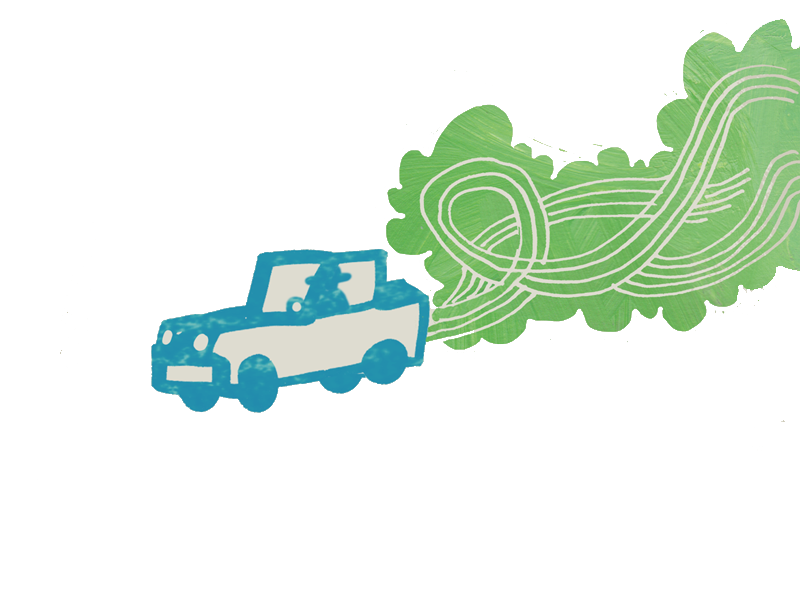

Vi är en en ideell förening som ökar kunskapen om biogas. Här kan du se vad vi gjort, gör och varför.
Läs mer

Biogas är en gas som kan tillverkas från matrester eller avlopp. Gasen kan användas som bränsle och ersätter då diesel och bensin i bilar, bussar, fartyg eller tåg. Motorer som drivs med ren biogas har ingen negativ inverkan på klimatet.
Läs mer

Vill du läsa mer om vad vi gjort, om biogas eller om gasbilar i Sverige och i världen? Eller kanske få hjälp att välja rätt gasbil för dig? Vi har samlat några nyttiga länkar där du kan få svar på dina frågor.
Läs mer